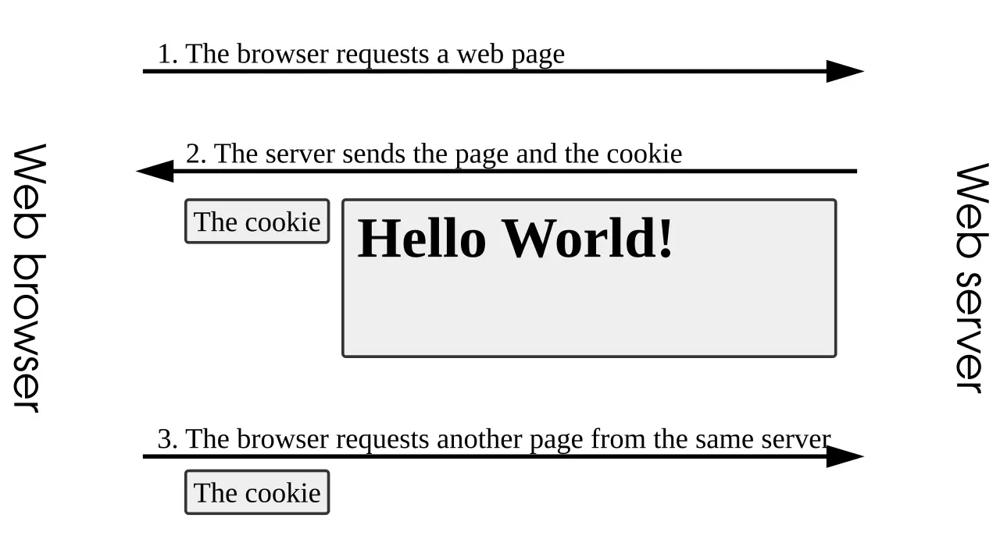

短答
当文档不随访问变化时，会话标识应该在 cookie 里，而不是在 URL 里。
cookie 图显示 id 被存储并送回，而不成为地址的一部分。包含 id 的 URL 每次都是一个新地址，于是 canonical、sitemap 和缓存都会裂开。SEO 健康从链接中去掉会话参数。这里的 cookie 不是一堂跟踪课。它是避免制造 URL 的一种方式。
定义
如果 HTML 真的对每个用户都不同，cookie 也不会使这些变体成为一份文档。个性化页面不应该是规范的公开 URL。公开文档应该在没有会话 cookie 时也可获取，并且两次干净的获取看起来相同。
这如何影响可索引的 URL
从 URL 和链接中去掉会话 id，并确认不带 cookie 的获取仍然返回公开文档。
先加上会话 id 再 canonical 回干净 URL 的重定向是一团混乱。停止添加 id。需要活动代码的分析可以读一次，然后在干净 URL 上继续。内链不得保留该代码。

要检查什么
- 内链或 sitemap 中没有会话 id
- 从旧的带 id URL 到干净路径的一跳重定向
- 不带 cookie 的获取仍然返回公开文字
- 个性化视图不用作规范 URL
- 一条干净的产品 URL 被获取两次
一个结构示例
商店把每条内链都改写成包含 ;jsessionid=，sitemap 导出这些 URL。两次获取就是两份文档。修复是停止改写，把任何带 id 的 URL 一跳重定向到干净路径，并用干净 URL 重新生成 sitemap。购物车仍然可以有 cookie。
它不声称什么
去掉会话 URL 不保证排名或引用。
Mika Visibility 把它归到哪里
Mika Visibility 把首选 URL 当作 SEO 健康信号。规范链接、重复页和 sitemap 不一致会连同样例 URL 一起记录。它们不预测排名。SEO 增长问的是这条首选 URL 是否真的覆盖了某个意图。这些问题保持在不同的尺度上。
cookie 图显示 id 留在地址之外，这正是本文想避免的分裂。
常见问题
会话 id 应该放在哪里？
当文档不随访问变化时，会话标识应该在 cookie 里，而不是在 URL 里。
不带 cookie 的获取应该返回什么？
从 URL 和链接中去掉会话 id，并确认不带 cookie 的获取仍然返回公开文档。
去掉会话 URL 能保证排名吗？
去掉会话 URL 不保证排名或引用。
下一步
做一次结构化的 SEO + GEO 审计，查看健康发现、增长缺口和可以执行的蓝图。
更清晰的实体、答案、证据和上下文，会让页面更容易被理解与引用。任何回答产品中的结果都不作保证。